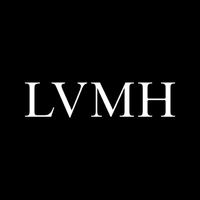

- Nous recherchons pour un de nos magasins de Paris (intra-muros) un(e) Responsable de magasin (h/f) en CDI à temps complet (35 heures). Mission : Polyvalent, au sein d'une equipe de 4 a 6 personnes, vous developpez un reel service aupres de nos clients. Veritable commerçant, vous etes valeur d'exemple pour votre equipe.Operationnel, vous animez une equipe autour des valeurs fortes de l'entreprise.
- Elysées Hotels (Hotusa Group) recrute un(e) Assistant administratif en charge des travaux administratifs courants : suivi des dossiers administratifs, suivi de la facturation et des reglements fournisseurs, de la saisie de documents et de tableaux, du tri et de l'affranchissement de courrier, etc... Il/elle assurera éealement une assistance commerciale.
- Votre role est donc d'analyser la sante financiere des prospects et entreprises clientes a travers divers outils et documents afin de minimiser les risques. Vous etes egalement en relation avec nos commerciaux, les services internes as l'entreprise.
- TIntégre a la direction des Operations de LVMH, vous reportez au Directeur Supply Chain et Manufacturing Groupe.Vous intervenez en tant que consultant interne aupres des Maisons pour les aider dans leurs reflexions et projets d'organisation, de transformation, d'optimisation.


